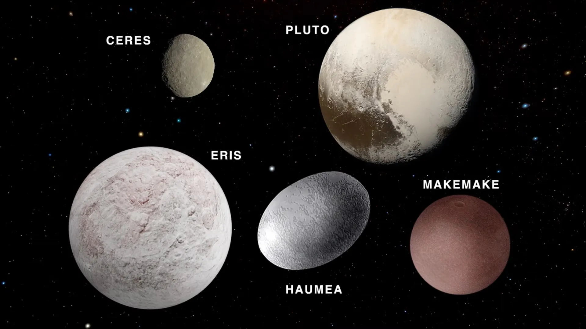
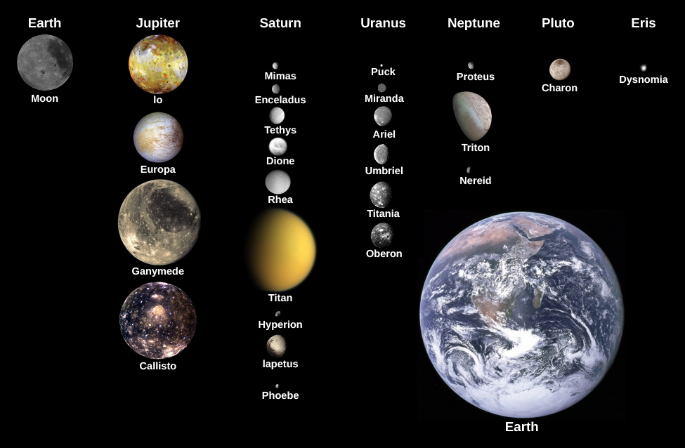
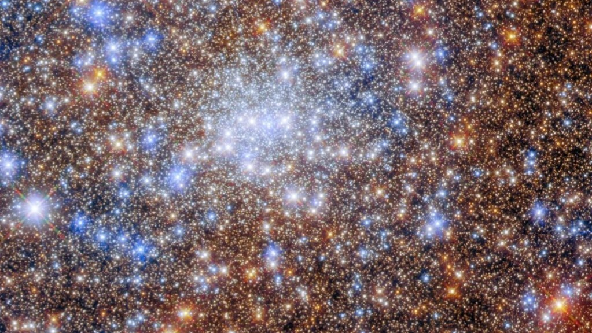
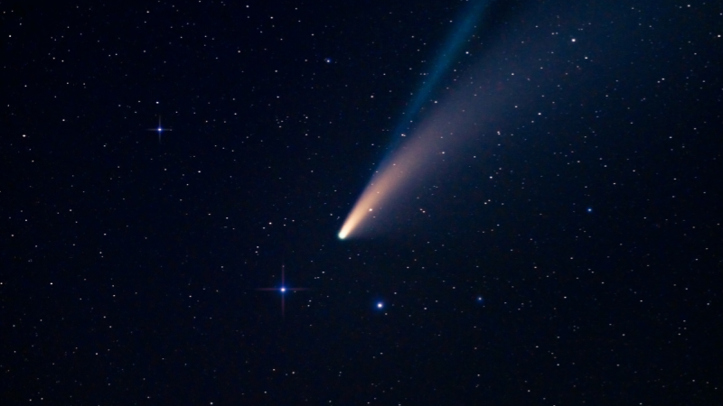
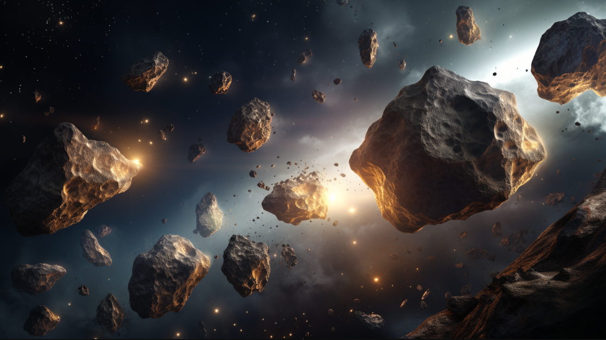
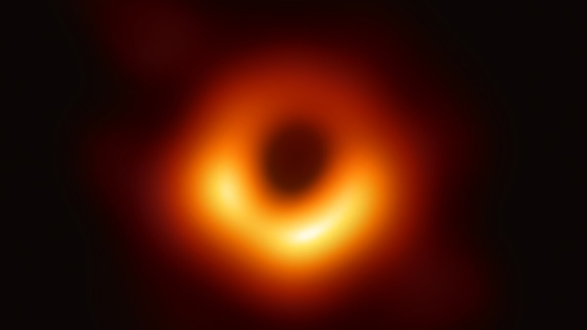
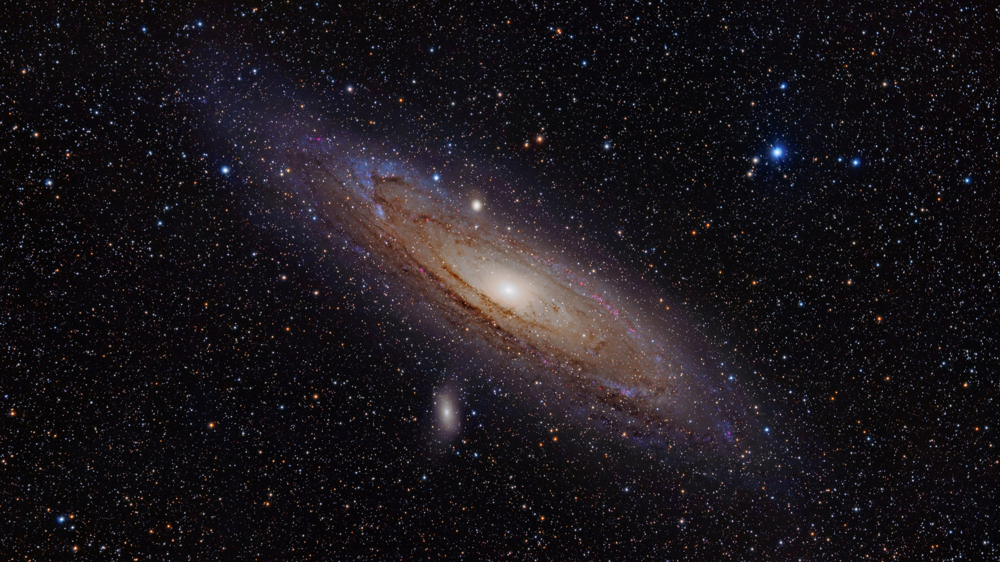

Sun

The Sun is the star at the center of our Solar System. It provides light, heat, and energy to all planets. It is mostly hydrogen and helium and has a diameter of about 1.4 million km.
Mercury

Mercury is the closest planet to the Sun. It has a cratered surface, extreme temperatures, and almost no atmosphere. A year lasts only 88 Earth days.
Venus

Venus has a thick, toxic atmosphere of carbon dioxide and clouds of sulfuric acid. Surface temperatures can reach 465°C, hotter than Mercury, even though it is farther from the Sun.
Earth

Earth is the only planet known to support life. It has water, an oxygen-rich atmosphere, and one natural satellite: the Moon. Earth rotates once every 24 hours and orbits the Sun in 365 days.
Mars

Mars, the Red Planet, has the tallest volcano (Olympus Mons) and the deepest canyon (Valles Marineris) in the Solar System. Scientists study it for evidence of water and possible life.
Jupiter

Jupiter is the largest planet. It has a thick atmosphere of hydrogen and helium, dozens of moons, and the Great Red Spot, a massive storm larger than Earth.
Saturn

Saturn is famous for its beautiful rings made of ice and rock. It is a gas giant with over 80 moons, including Titan, which has a thick nitrogen atmosphere.
Uranus

Uranus is an ice giant with a blue-green color caused by methane. It rotates on its side and has faint rings. It has 27 known moons.
Neptune

Neptune is the farthest planet in the Solar System. It has strong winds, a deep blue atmosphere, and 14 known moons. Triton is its largest moon.
Kepler-22b

Kepler-22b is an exoplanet located about 640 light-years from Earth in the habitable zone of the star Kepler-22, making it a candidate for potential habitability.
Dwarf Planets

Dwarf planets include Pluto, Ceres, Makemake, Haumea, and Eris. They are smaller than the main planets and orbit the Sun in different regions of the Solar System, often in the Kuiper Belt or asteroid belt.
- Pluto: Once considered the ninth planet; has five known moons.
- Ceres: Located in the asteroid belt; only dwarf planet in the inner Solar System.
- Makemake: A Kuiper Belt object; bright surface covered with methane ice.
- Haumea: Known for its elongated shape and fast rotation.
- Eris: A distant dwarf planet slightly smaller than Pluto; very reflective surface.
Moons

The Solar System has over 200 known moons. Famous ones include:
- Earth's Moon
- Jupiter's Io, Europa, Ganymede, and Callisto
- Saturn's Titan and Enceladus
- Neptune's Triton
Stars

Stars are massive balls of gas that emit light. The Sun is a medium-sized star. Stars come in different sizes, colors, and temperatures:
- Red Giants
- White Dwarfs
- Neutron Stars
- Supergiants
Milky Way Galaxy

The Milky Way is a spiral galaxy containing billions of stars, planetary systems, and nebulae. Our Solar System is located in the Orion Arm.
Other Galaxies

Galaxies are massive systems of stars, gas, and dust. Examples include Andromeda, Triangulum, and countless others in the universe.
Nebulae

Nebulae are clouds of gas and dust in space, often where stars are born. Famous nebulae include the Orion Nebula and Carina.
Comet

Comets are icy bodies that develop tails when they approach the Sun. They originate from the outer regions of the Solar System.
Asteroids

Asteroids are rocky objects that orbit the Sun, mostly found in the asteroid belt between Mars and Jupiter. They vary in size from tiny pebbles to hundreds of kilometers across.
Blackhole

Black holes are regions in space where gravity is so strong that nothing, not even light, can escape. They form when massive stars collapse at the end of their life cycle.
Andromeda Galaxy

The Andromeda Galaxy is a spiral galaxy similar to the Milky Way. It is the closest major galaxy to our own and is visible to the naked eye.